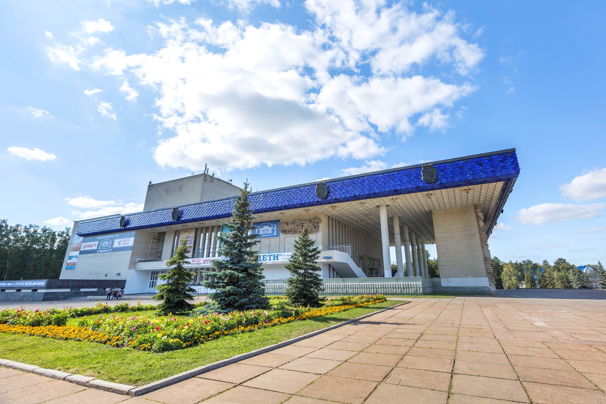
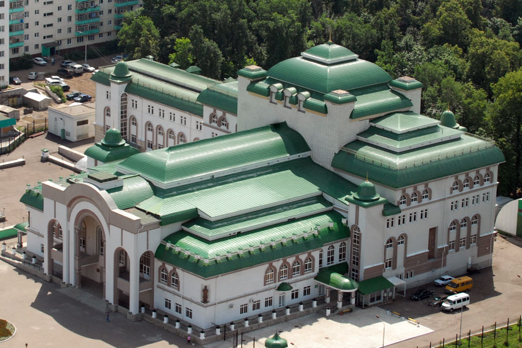
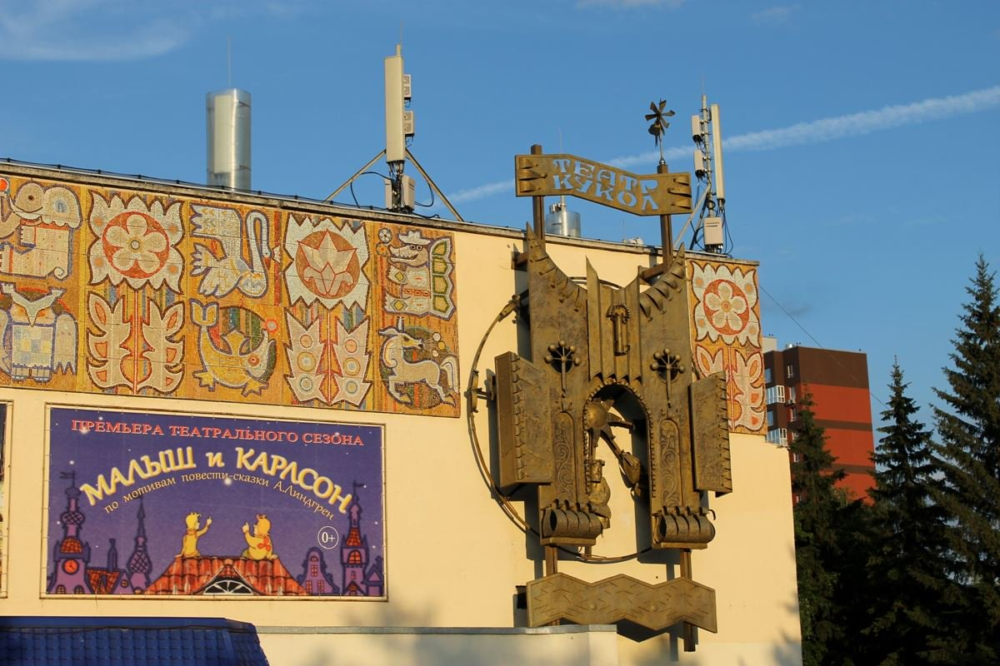
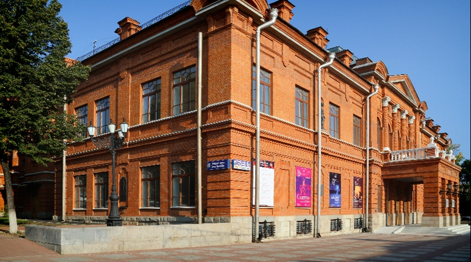

Башкирский театр
Истоки, или зарождение башкирского театра. Такие празднества, как «Воронья каша», «Кукушкин чай», «Медвежий праздник», обряды, связанные с рождением и социализацией ребенка, свадебные обряды, лечебная магия и другие - почти все они представляют собой прообраз театрального искусства. В обрядах, играх и празднествах башкир много танцев, песни, которые исполняются почти всеми участниками обряда. Вот эти особенности башкирских обрядов были приняты и развиты В.Г. Иманским, первым режиссером и актером башкирского театра. Эпические и исторические сюжеты и обрядовые формы народной культуры привносят в театр методологические принципы и поэтику народного театра. Становление национальной драматургии углубляет процесс формирования самобытной эстетики башкирской сцены. В 1919-24 годах складывается театральная система Иманского, реализованная в деятельности Башкирского передвижного театра. Взгляды Иманского нашли отклик в теоретических работах и художественной практике И. Зайни, Г. Мингажева, Б. Юсуповой, Г. Альмухаметова, Ф. Гаскарова.В 30-х годах в Уфе появилось еще несколько театров: республиканский русский, кукольный, театр оперы и балета.

Позднее государственные театры открылись в других городах Башкортостана: башкирские - в Сибае и Салавате, русский и башкирский - в Стерлитамаке. Современную и жизнестойкую форму нашли театралы города Стерлитамака. Там в 1980 году создано театральное объединение «САММИ». Кроме них, в районных центрах, городах, дворцах культуры Уфы успешно работают народные театры. Самодеятельным драматическим кружкам, которые получают широкое признание зрителей, присваивается звание «народный». В Сибае, наряду с башкирским государственным театром долгие годы успешно работал и башкирский народный театр. Недавно он был преобразован в театр-студию. Таким образом, в Зауралье стало два профессиональных театральных коллектива. А в Уфе сбылась давняя мечта молодежи города, в 1990 году открылся Национальный молодежный театр.
В следующем году Вали Муртазин поставил музыкальную сатирическую комедию Хабибуллы Ибрагимова «Башмачки». В Башкортостане нет человека, который не знал бы этого блистательного произведения.
В 30-е годы сложился новый образ режиссуры, о которой можно говорить как о целом направлении в искусстве постановки (Ш.М. Муртазина, Р.В. Исрафилов, Л.В. Валиев). Подлинный переворот произошел в искусстве театральной декорации: Г.Ш. Имашева, Т.Г. Еникеев. На новые уровни сценической поэтики, профессионального мастерства вышел актер. На протяжении 1960-1980-х годов мощными волнами в академическую труппу вошли люди, в чьи руки перешли ключи к поэтическому коду национальной сцены. Это, с одной стороны, выпускники башкирской студии Российской театральной академии Гулли Мубарякова, Зинира Атнабаева, Роза Каримова, Ильшат Юмагулов, Хамит Яруллин, Шамиль Рахматуллин, Гузель Сагитова, Муллаян Суяргулов. А с другой - воспитанники Уфимской театральной школы, представленные уже всеми возрастными группами: Асия Нафикова, Дарига Файзуллина, Кашаф Назиров, Нурия Ирсаева, Ильсияр Гизетдинова, Савия Сираева, Фидан Гафаров, Ахтям Абушахманов, Ахат Хусаинов, Рамзия Хисамова, Тансулпан Бабичева, Олег Ханов, Танзиля Хисамова, Загир Валитов, Рафиль Набиуллин и другие. Состоялся как режиссер А. Надыргулов. В 1948 году в театр пришел талантливый актер Хусаин Кудашев, сыгравший более 200 ролей.
Русский драмматический театр. Днем рождения Русского драматического театра в Уфе считают 27 марта 1861 года. В 1931 году была набрана новая труппа, которую возглавил А. Андреев. Спектакли показывали во Дворце труда. Самыми значительными работами театра в 30-е годы были «Темп» Н. Погодина, «Страх» А. Афиногенова, «Разгром» А. Фадеева, «Гроза» А.Н. Островского, «Оптимистическая трагедия» В. Вишневского, «Мещанин во дворянстве» Ж.Б. Мольера и другие.
В 70-е годы в театре появлялись самые острые, животрепещущие произведения советских писателей и драматургов: Н. Эрдмана, Н. Думбадзе, В. Распутина, В. Астафьева, В. Васильева, И. Дворецкого, А. Галича, Л. Петрушевской, М. Рощина. Заслуживает внимания и обращение Русского драматического театра к башкирской национальной драматургии: «Салават» Б. Бикбая, «Тансулпан» К. Даяна, «Изгнанная» И. Юмагулова, «Похищение девушки», «Страна Айгуль» М. Карима.
Многие годы театр возглавляли директор, заслуженный работник культуры РСФСР Л. Левитин и главный режиссер, заслуженный деятель искусств РСФСР и Башкортостана Г. Гилязев. В 1983-1984 гг. им на смену пришли заслуженный работник культуры Башкортостана В. Стрижевский и заслуженный деятель искусств Башкортостана М. Рабинович.
В 1982 году театр переезжает в новое здание в центре Уфы. Это позволяет театру открыть Малую сцену, улучшить техническое оснащение. Государственный академический русский драматический театр Республики Башкортостан – участник и призер Всероссийских и Международных фестивалей разных лет. Ближайшие: 1993 и 1995 годы – Международный фестиваль русских драматических театров в Йошкар-Оле, в 1994 году - Международные фестивали в Ялте и Москве, в 1997 и 1999, 2005 – Международный фестиваль «Театр без границ» в г. Магнитогорске, в 1998 г. – Всероссийский фестиваль в Костроме, посвященный 175-летию А.Н. Островского и Международный фестиваль театрального авангарда в г. Раквере (Эстония), 1999 год – Международный фестиваль в Киеве «Киев майский», 2000 и 2003 года – театральный фестиваль камерных спектаклей «Он и она» в г. Тольятти, 2004 году – театральный фестиваль «Золотой конек» в Тюмени, 2005 году – Международный театральный фестиваль «Реальный театр» в Екатеринбурге, 2006 году – Международный театральный фестиваль «Белая вежа» в Бресте (Беларусь), 2007 году - Международный фестиваль Fontanon Estate в Риме (Италия).
Татарский театр Нур. Татарский театр в Башкортостане сложился на рубеже ХIХ-ХХ вв. Он формировался и развивался под благотворным влиянием русской театральной культуры. Первый спектакль 1-й профессиональной труппы под руководством И.Б. Кудашева - Ашкадарского «Ученые и невежды», как и многие другие произведения раннего периода, являлся переводом и переделкой комедии А.Н. Островского «В чужом пиру похмелье...». Труппа, выступившая под названием «Мусульманская драма и мелодрама» («Фажигэ уэ месэккин исламия»), дала начало театральным объединениям края. Это, прежде всего, «Сайяр», «Нур» и труппа Муртазина-Иманского - «Ширкэт». В начале 90-х созданы 2 татарских сценических коллектива - Уфимский татарский государственный театр «Нур» и Туймазинский драматический театр.
Уфимский татарский государственный театр «Нур» основан в 1991 г. Открытие первого театрального сезона Туймазинского драматического театра, состоялось 2 декабря 1991 года со спектаклем классика татаро-башкирской драматургии М. Файзи «Ак калфак» на сцене ДК «Родина». Из числа талантливых самодеятельных артистов была набрана первая труппа: Рима Ключарева, Венер Закиров, Таурат Надршин, Маргарита Сидорова, Венер и Лира Сулеймановы, Муршида Фаррахова, Динар Кутдусов, Файруз Шарипов и др.
Башкирский государственный театр кукол. У Башкирского государственного театра кукол богатая и славная биография. Ее первая страница написана была 5 февраля 1932 года В этот день в Малом зале Уфимского дворца искусств (ныне театр оперы и балета) состоялся его первый спектакль «Репка». Естественно, театр возник не на пустом месте. У него была достаточно прочная творческая основа - самодеятельный кружок, организованный при Уфимской опытно-показательной школе. Руководила этим кружком человек необыкновенного таланта - Мария Николаевна Елгаштина. Она же стала первым директором и режиссером кукольного театра.
Первые три месяца театр играл спектакли только на русском языке, а летом 1932 году М.Н. Елгаштина привлекает к работе с куклами артистку Башкирского драматического театра Гамбару Мансурову, которая организует и возглавляет башкирскую труппу театра. Вскоре театр стал называться Республиканским объединенным театром кукол. Репертуар был широк и разнообразен: народные сказки (русские, башкирские, народов Кавказа и Прибалтики, Средней Азии, Дальнего Востока и Крайнего Севера); произведения Пушкина, Лермонтова, Некрасова, Пришвина, Маршака, Аксакова, Шварца...)
Но недолгим было безоблачное «детство» театра - началась Великая Отечественная война. Театр кукол начал перестраиваться на работу в новых условиях. Долгие годы у театра не было специального помещения. В ноябре 1976 года театр пригласил зрителей в свой новый дом по адресу: проспект Октября 158. С этого времени у театра начинается поистине новая творческая жизнь.
В 1980 г. театр ездил с творческим отчетом в Москву. Это событие стало большим праздником в жизни коллектива. В 1988 году театр участвовал на фестивале в Индии. За спектакль «Индийская легенда» (режиссер заслуженный деятель искусств РБ П.Р. Мельниченко) театр был удостоен Международной премии им. Дж. Неру. Последние годы творческим коллективом руководили А.Р. Саетов (директор) и заслуженный артист РФ, народный артист РБ А. Ахметшин (главный режиссер). С 2011 года театром руководит И.Р. Альмухаметов.
Национальный молодежный театр. 28 сентября 1990 года состоялось торжественное открытие Театра юного зрителя. Создание театра, тем более театра для детей и юношества – это одно из величайших и благих дел человечества. Одним из таких людей и является основатель Театра юного зрителя, сегодняшнего Национального молодёжного театра Республики Башкортостан имени Мустая Карима, заслуженный деятель искусств РФ, лауреат Государственной премии им. С. Юлаева и премии обкома комсомола им. Г. Саляма, профессор Габдулла Габдрахманович Гилязев.
Театр имеет две труппы - башкирскую и русскую. Первым художественным руководителем был О.З. Ханов.
Театр представлен такими талантливыми актерами, как С. Буранбаева, З. Давлетбаева, Р. Каримова, Н. Нургалин, М. Усманов, З.Саетова и др. В этом же театре играл талантливый актер Р. Басареев. Русскую труппу театра представляют актеры: М. Апраксина, О. Балакова, Т. Гурина, Ю. Горбучов, Е. Волошин и многие другие. В репертуаре театра произведения У. Шекспира, Лопе де Веги, А.С. Пушкина, А.Н. Островского, М. Бурангулова, М. Карима, Г. Шафикова и др.
Театр молод, находится в постоянном поиске, поднимает актуальные проблемы современности, пытается не отстать от тенденций мировой сцены.
Башкирский театр оперы и балета. Многие годы в республике живет и работает Башкирский государственный театр оперы и балета. Он был основан 14 декабря 1938 году. В этом же году состоялся первый выпуск национального отделения. Из Москвы зачинатели привезли дипломный проект-оперу Паизиелло «Прекрасная мельничиха». Оркестр и хор театра были сформированы из выпускников Башкирского музыкального училища, а художественным руководителем стал талантливый московский дирижер П.М. Славинский. Уже в первый сезон театр осуществил постановку четырех опер. Кроме премьеры «Прекрасной мельничихи», уфимцы увидели «Тайный брак» Чимарозы, «Ер Тыргын» Н.Бусиловского и «Фауст» Ш. Гуно.
Со сцены башкирского театра начиналось восхождение мировой звезды балета Рудольфа Нуреева (1938-1993). В Уфе состоялся его дебют, предопределивший становление знаменитого танцовщика и хореографа. Наличие в республике театра оперы и балета всегда являлось мощным стимулом для композиторов в создании музыкально-сценических произведений. З. Исмагилов - мастер оперного жанра и Н. Сабитов - мастер балетных партитур постоянно держали наполненным творческий портфель театра. И ныне не угасает активность башкирских композиторов, работающих в музыкально-сценических жанрах. В последнее десятилетие театр поставил оперы «Послы Урала», «Шаура» и «Салават Юлаев» З. Исмагилова, «Современники» Х. Ахметова, «Черноликие» Х. Заимова - А. Чугаева, камерную оперу «Черные воды» С. Низамутдинова.
Творческая атмосфера театра втягивает в свою орбиту многих звезд отечественного искусства. И это не только гастроли отдельных солистов. В Уфе прочно утвердилась традиция проведения праздников оперного искусства и хореографии - фестивалей, посвященных памяти выдающихся деятелей искусства. Начало этой традиции дал первый Шаляпинский фестиваль, прошедший в 1991 году. Тогда в лучшем спектакле - «Дон Карлос» - пели Александр Дедик, Иван Пономаренко, Нина Козлова, Наталья Рудина. Второй Шаляпинский фестиваль прошел в 1993 году.